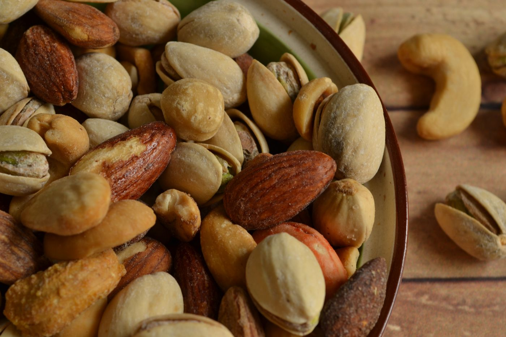
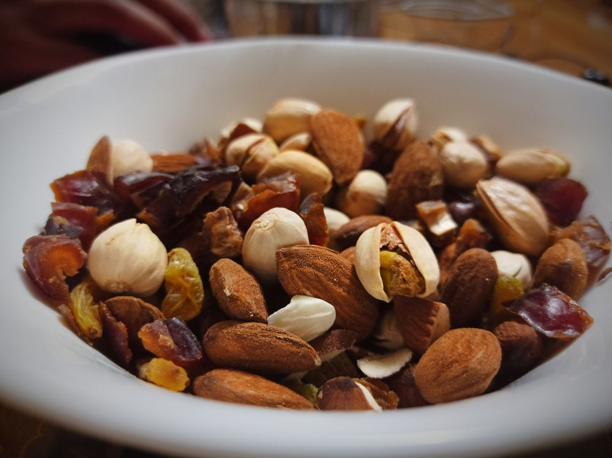
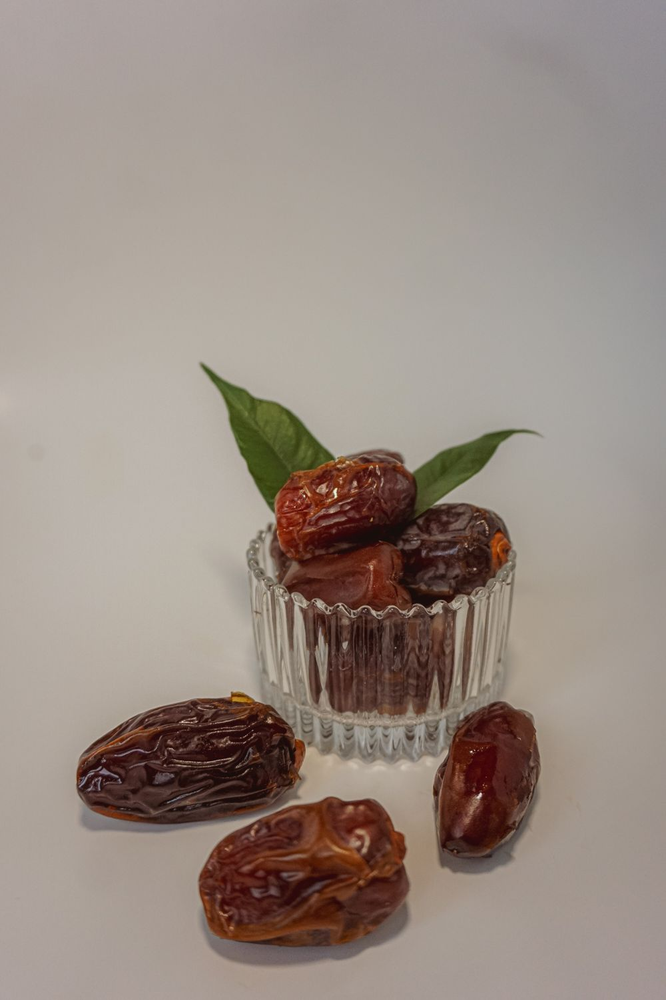

A NOTE FROM SVG
SVG DRY FRUITS THE EVERYDAY COLLECTION
Good things,
kept close.
Dry fruits for the kitchen counter, the desk drawer, and the moments worth sharing.
A familiar favourite, in good company.

A PLACE TO BEGIN
Find your way
to the good stuff.
A few familiar favourites, with room for the ones you haven’t met yet.

01 / THE PANTRY Nuts & almonds
02 / SOMETHING SWEET Dates & dried fruit 03 / TO TAKE ALONG Gifts & combinationsReference photographs shown for design direction; they are not SVG product photography.
FOR THE HOST, THE VISIT, THE LITTLE OCCASION
A THOUGHT TO TAKE ALONG
A small gesture.
A good one.
A gift can be simple and still feel considered. We’re making room for boxes and combinations that are a pleasure to give.
Explore giftingFor the jar by the kettle.
A little about usSomething you’d like to know?
Business contact details will be added here.